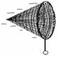
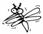
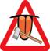
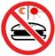
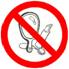
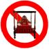

|
一、殺戒
|
【受戒文】
1. Panatipata
veramani-sikkhapadam samadiyami.
有息者(m.) 殺(m.s.Abl.) 離(f.) 學(f.) 處(n.) 我受持(1s.pres.)
pana +
atipata<ati超越+ pat落下veramani sikkha+pada <samadiyati <pass.(被動)
of samadati
我受持離殺生學處。
【釋義】
殺生(panatipata<pana生物+atipata殺)︰當中的「生物」(有息者)是連結命根的蘊相續，或者執取那(蘊相續)所施設的有情。(殺生為)對那生物、存生物想，生起採取斷那(生物)命根(的行動)，運用身、語門中的一門，以殺思(=心)而殺生。(KhA.26.)
《中部》(MA.9./I,198.；=Nd
《小誦注》(KhA.24.)：「『離』乃壓倒怨敵，是捨棄、除去、消滅怨敵使令不存在之義；或者〈就如〉有人藉由器具離怨敵。由vi-字誦成ve-字而成離。」KhA.24~25.：「從義上，(所謂)的『離』乃欲界善心相應的離。在《分別論》所說的：『在那離殺生之時，他1遠離(arati)、2離(virati)、3回避(pativirati)、4離(veramani)、5不作(akiriya無所作)、6不為(akaranam不作為)、7不違犯(anajjhapatti)、8破(惡緣之)橋。』」
KhA.24.︰「應當學為「學」(sikkha)；由此路徑為「處」(padam)。學之處為「學處」(sikkhapadam)，此乃是到達「學」的方法之義。或者說為「以依止根本而住立」。」KhA.25.︰「在此之義「學」乃已達到離的戒，世間毘婆舍那，色、無色禪那，以及聖道」的目的。」
【犯相】1.(對象)是眾生(pano ca hoti) [1]。
2.認定是眾生(panasabbi ca生物想)。
3.起殺心(vadhakacittabca paccupatthitam hoti)。
4.付之行動(vayamati)[2]。
5.導致死亡(tena ca maratiti)。(《小誦注》KhA.31.)
【無犯】[3]1.非故意(asabcicca)。
2.無知(ajanantiya)。
3.非意圖致死(namaranadhippayassa)。
4.精神失常(ummattikaya) [4]。(Para.III,78.；Sp.Para.II,463.)
【果報】離殺生(的果報)：肢體勻稱，長廣適中，腳站得穩，優美，柔軟，明淨，勇敢，大力，口齒伶俐，世人喜愛，無瑕疵，無畏懼，不被迫害，被他人攻擊不死，眷屬(或隨從)無量，姿態美，外表好，少病、無憂，與所喜愛的人、可意的人相處而不別離，長壽，如此等果報。(KhA.33.)
殺生果報有：《中部135經》〈小業分別經〉說︰「兇惡的殺生者，血手、專做殺戮，對諸有情無慈心(panatipati hoti luddo
lohitapani hatapahate nivittho adayapanno panabhutesu)。他如是成就，帶著這個業，身壞命終之後，往生於離去(福樂)處(apayam)、惡趣(duggatim)、落難處(vinipatam)、無去(無自由來去)處(nirayam)(此四名詞都是「地獄」的同義詞)。身壞命終後，若不往生於離去處、惡趣、落難處、無去處；若來人位者，再生於任何地方也會短命(appayuko)。」
《增支部》(
《分別善惡報應經》卷下(T1.899.2)︰殺生果報有十︰「一冤家轉多。二見者不喜。三有情驚怖。四�琩�苦惱。五常思殺業。六夢見憂苦。七臨終悔恨。八壽命短促。九心識愚昧。十死墮地獄。」(按︰《分別善惡報應經》為沙門臣天息災譯，應為後期佛教的整理，但是也有值得參考之處。)
* 有人認為為了救人、「為救多數之人」可以開緣殺「惡人」(《菩薩戒本》(T24.1112.1)、《大方便佛報恩經》卷第七(T3.161.2-3))，此非佛說，且救人的善業與殺人的惡業不能相抵。佛教不認為壞人可殺，如大壞人提婆達多，往世與當生，都做了不少壞事，但是佛陀也沒有說他該殺。若是對付猛獸與「害虫」，可遠離或隔離。例如︰室內蚊子可以捕捉後，在室外釋放；或使用薰香驅蚊，如燃燒曬乾的艾草、(紫背)浮萍、香椿等，或任何草木皆可驅蚊。 |
  |
二、盜戒[5] |
【受戒文】
2. A-dinnadana veramani-sikkhapadam samadiyami.
不
給予 拿起(m.s.Abl.)
離(f.) 學(f.) 處(n.) 我受持(1s.pres.)
a+dinna+adana
veramani
sikkha+pada <samadiyati <pass. of samadati
我受持離偷盜學處。
【釋義】
律藏•波羅夷(Para.III,46.)︰「不給與︰凡是不給與，非捨棄物，非永遠捨棄物，受守護之物，受人珍愛，他人所有物，此稱為「不給與」。」
不與取(adinnadana)︰他人所擁有的為「不(給)與」(adinnam)。當在他人為所欲為的侵犯(=偷竊)時，也是不作處罰、不責難的。(「不與取」為)他人所擁有，他人所擁有想，生起採取盜取的行動，運用身、語門中的一門，以盜思(=心)不與而取。(KhA.26.)
【犯相】1.他人所有物(parapariggahitabca hoti有主物)。
2.認定是有主物(parapariggahitasabbi
ca)。
3.起盜心(theyyacittabca paccupatthitam hoti)。
4.有行動(vayamati舉離本處)[6]。
5.拿到東西(tena ca adatabbam adanam gacchatiti.取當取之物)。
【無犯】1.以為是自己的東西(sasabbissa作己物想)。
2.親厚想( vissasaggahe自信[7]物主會樂意給予)。
3.暫時借用(tavakalike)。
4.鬼擁有物(petapariggahe)。(鬼(peta)︰包括夜叉、四大王天、天人等)
5.畜生擁有物(tiracchanagatapariggahe)[8]。
6.以為是垃圾(pamsukulasabbissa)[9]。
7.精神失常(ummattakassa)。
(Para.III,55.；Sp.Para.II,371-2；《善見律毘婆沙》卷第十(T24.740.3))
【果報】離不與取(的果報)：大財富，財穀豐富，無量財產，生出未起的財產，已生起的財產堅固，所欲之財迅速獲得，財產不與王、賊、水、火、不肖者所共，得不共財，世間的領導，無所不知，樂住，如此等(果報)。(KhA.33-34)
《分別善惡報應經》卷下(T1.899.2)︰「偷盜報有十種。何等為十？一結宿冤。二�睆羹{。三惡友隨逐。四善友遠離。五破佛淨戒。六王法謫罰。七恣縱愓逸。八�畬冱~惱。九不自在。十死入地獄。」
* 一般國家都有「關稅」(tariff)(古代就有設海關(suvkatthana, =suvkaghata))、「所得稅」(incomes tax)的規定，凡貨物進出口，或有所得就須申報繳稅，除非有免稅的條款或項目，否則不繳稅就觸犯法律及犯偷盜戒。
三、離淫戒 |
【受戒文】
3. Abrahmacariya veramani-sikkhapadam samadiyami.
非 梵 行為(m.s.Abl.) 離(f.) 學(f.) 處(n.) 我受持(1s.pres.)
a +brahma +cariya veramani
sikkha+pada <samadiyati <pass. of samadati
我受持離非梵行學處。
【釋義】
非梵行(abrahmacariya)︰非殊勝行(=卑劣行)，以從事非正法原因的違犯之思(=心)，運用身門，雙雙達到三摩缽地(性高潮)從事婬欲，為非梵行。(KhA.26.)
婬欲是障道法(antarayiko dhammo)，佛陀已在經、律、論中，從不同面向解說。《大智度論》(T25.107.3 ~108.1)︰「(喜根法師︰)淫欲即是道…淫法不生滅，不能令心惱。」此是邪見。更不可能正在行婬當中，得解脫，如「雙身法」所說。「行淫」若涉及主動，不可能清淨的，以男人來說，舉陽就是有淫欲心的反應，「行淫」有一些技法，如採陰補陽等，可能有滋補男或女，但是都歸屬卑劣行，佛陀在《轉法輪經》中就明示此理。克制婬欲乃能邁向出離之路。
《小誦》(KhA.151.)︰「梵的行為，諸梵天的行為，稱為‘梵行’，優良的行為之稱。」(Brahmam cariyam, brahmanam va
cariyam brahmacariyam, setthacariyanti vuttam
hoti.) KhA.152.︰「梵行：沒有(男女)淫欲，及具足沙門法。」離婬欲即斷絕一切性行為，廣義地說，包括肌膚之親；與婦人嬉笑遊戲；看女人的眼睛(包括看體型、體態，或聞體香等)；聽女人之笑聲、說話、唱歌、哭泣；追憶過去曾與女人相笑、相談、遊玩；甚至於想往生沒有婬欲的梵天界，也被包括在「七淫結」之內。(cf.《增支部》(
【犯相】1.交媾(ajjhacariyavatthu ca hoti)[10]。
2.生起淫欲心(tattha ca sevanacittam
paccupatthitam hoti)。
3.達到從事(性交)之緣的方式(sevanapaccaya payogabca samapajjati)[11]。
4.接受(sadiyati cati) [12]。。
【無犯】1.(睡眠或昏迷中)無覺知(ajanantassa)。
2.沒有接受(asadiyantassa)(Sp.Para.I,269.︰若是知道的話，也完全沒接受。)
3.精神失常(ummattakassa)。(Sp.Para.I,254-5.︰由於夜叉或膽汁等的關係而得了無法治療的狂亂病。)
4.發狂(khittacittassa)。(由於夜叉等的關係而發狂。)
5.極度痛惱者(vedanattassa)。(Para.III,33.) (Sp.Para.I,270.︰再大的苦受、不舒服都不知道。)
【果報】離非梵行(的果報)︰沒有仇敵，一切人所喜愛，獲得食物、飲料、衣服、住處，躺臥快樂，醒覺快樂，解脫苦界(=惡趣)的怖畏，不會生為女性或不能男，不忿怒、不掩飾、不驚慌、臉不下向(丟臉)，男女相愛，諸根圓滿，諸相圓滿，無疑惑、生活悠閒、樂住，無怖畏處，無離別喜愛，如此等(果報)。」(KhA.34.)(按︰「不會生為女性」((na)
itthibhavappatilabhassa)，乃由「願生為男」及「不願生為女」來決定。)
《分別善惡報應經》卷下(T1.899.2)︰「邪欲報有十種。何等為十？一欲心熾盛。二妻不貞良。三不善增長。四善法消滅。五男女縱逸。六資財密散。七心多疑慮。八遠離善友。九親族不信。十命終三塗。」
【附帶說明】
邪淫戒 |
【受戒文】
Kamesu micchacara
veramani-sikkhapadam samadiyami.
淫欲 邪 行(m.s.Abl.) 離(f.) 學(f.) 處(n.) 我受持(1s.pres.)
kama miccha+cara veramani sikkha+pada <samadiyati <pass. of samadati
我受持離邪淫學處。
【釋義】
Atthasalini(殊勝義) (DhsA.p.98.；=MA.9./I,199.)︰「『邪欲樂行』（邪淫）裡的『欲樂』是指『性交』；『邪行』是指『低賤及實應受到譴責的行為』。『邪欲樂行』的特相是生起於身門的思（cetana，意願），具有侵犯自己無權同其行房者的不如法意念。於此，不正確(男人無權與之行房者)是：（甲）十種未婚女人，即：一、為母所護[13]；二、為父所護；三、為父母所護；四、為兄弟所護；五、為姐妹所護；六、為親戚所護；七、為氏族所護；八、為法所護(如受持梵行戒)；九、有護(=有丈夫)；十、正受懲罰(MT.9./CS:pg.1.301.︰若靠近此女將受罰)；以及（乙）十種已婚女人，即：一、以錢財買來(的妻子)；二、自願為人妻者；三、為了財富而為人妻者；四、為了服飾而為人妻者；五、(正式結婚)
水得妻(odapattakini授水婦。觸水缽而令住。共取缽水灌手，共誓言：「願此水和合不離」。)；六、取下(頭上布)墊子(成為)妻子；七、奴隸(兼)妻；八、傭人(兼)妻；九、戰俘(兼)妻；十、短暫的妻子(一夜情)。當中，有十二類女人是其他男人不可侵犯的，即：有護女和正受懲罰的女人，以及後面十種(已婚女人)。」(cf. MA.9./I,199.、《中阿含15經》〈羅云經〉(T1.437.3)及〈優婆塞經〉T1.616.2) MA.41./II,330.說第十一種「未婚女」︰「環繞一串華鬘之女人(malagunaparikkhitta)︰以終身的約束︰“此女將成為我的妻子”，想定之後，他以一串華鬘戴在她的頭上，或環繞一串華鬘。」
《長部•戒蘊品新抄》(DT2.pg.1.334.)︰「有此說法︰四種邪淫︰(1)非時、(2)非處(如寺中、塔內等)、(3)非(生)支(指口及肛門)、(4)非法(不可行淫的對象)。」(Ye paneke vadanti “cattaro kamesu micchacara akalo, adeso, anavgo, adhammo ca”ti.)《說一切有部俱舍論》卷第十六(T29.87.1)︰「論曰︰總有四種行不應行，皆得名為欲邪行罪。一於非境行不應行，謂行於他所攝妻妾或母或父或父母親乃至或王所守護境。二於非道行不應行，謂於自妻口及餘道。三於非處行不應行，謂於寺中制多迥處。四於非時行不應行，非時者何？謂懷胎時，飲兒乳時，受齋戒時，設自妻妾亦犯邪行。有說︰若夫許受齋戒，而有所犯方謂非時。」
【犯相】1.對象︰非配偶或正當的對象。
2.生起淫欲(男人若舉陽就有淫欲心)。
3.從事性交。
【無犯】1.(睡眠或昏迷中)無覺知。2.沒有接受。3.精神失常。4.發狂。5.極度痛惱者。
【果報】邪婬(的果報)︰佛告奈女(妓女)(《般泥洹經》T1.179.1)︰「好邪婬者，有五自妨，一者名聲不好。二者王法所疾。三者懷畏多疑。四者死入地獄。五者地獄罪竟受畜生形。皆所致，能自滅心。不邪婬者，有五增福，一者多人稱譽。二者不畏縣官。三者身得安隱。四者死上天生。五者從立清淨泥洹道。」此段勸導奈女(Ambapali菴婆波梨)的文字，沒有出現在《大般涅槃經》D.16-11.Ambapaliganika菴婆波梨眾。
《分別善惡報應經》卷下(T1.899.2)︰「邪欲報有十種。何等為十？一欲心熾盛。二妻不貞良。三不善增長。四善法消滅。五男女縱逸。六資財密散。七心多疑慮。八遠離善友。九親族不信。十命終三塗。」
*《相應部》〈勒那叉相應〉21個鬼故事中，有一姦夫，姦淫有夫之婦，死後變鬼，陷在糞坑中，露出頭以手抓糞吃糞(S.19.11.；Para.III,106.)。另有一有夫之婦犯邪淫，死後變無皮女鬼(此女的身體的觸摸非自主的，是屬於丈夫擁有的，她卻偷男人尋樂，以致受無皮之報。)(S.19.13.；Para.III,107.；S
* 嫖公娼不算邪淫；依理，嫖私娼、阻街女郎(street girl)也不算邪淫，但國法不容。
四、妄語戒[14]  |
【受戒文】
4. Musavada veramani sikkhapadam samadiyami.
虛妄 語(m.s.Abl.) 離(f.) 學(f.) 處(n.) 我受持(1s.pres.)
musa+vada veramani sikkha+pada <samadiyati <pass. of samadati
我受持離妄語學處。
【釋義】
虛妄語(musavada)︰當中的「虛妄」是由運用語言或身體，致力於欺騙而破壞(真實)義者。以欺騙的目的，運用語言或身體生起而欺騙他人，運用身、語門中的一門，以邪思(=心)(說)虛誑語。(KhA.26.)
S
【犯相】1.欺騙(tava musa ca hoti tam vatthu)。
2.對那對象現起欺騙心(visamvadanacittabca paccupatthitam hoti)。
3.適當的行動(tajjo ca vayamo)。
4.以及生起欺騙他人所知的表示(paravisamvadanabca vibbapayamana vibbatti pavattatiti)。
【無犯】1.增上慢(adhimanena)。
2.無意圖(說謊)的說溜嘴(anullapanadhippayassa)。
3.精神失常。
4.發狂。
5.極度痛惱者。(Para.III,100.；Sp.Para.II,502.)
【果報】離虛誑語(的果報)：諸根明淨，語詞清晰、甜美，牙齒整齊、純白、不太粗、不太細、不太短、不太長、咬合舒適，口有青蓮花香，隨從恭聽，說話受歡迎，舌如蓮花、青蓮花瓣一般柔軟、紅薄，不掉舉、不輕躁，如此等(果報)。(KhA.34.)
《分別善惡報應經》卷下(T1.899.2)︰「妄語報有十種。何等為十？一口氣�痧銦C二正直遠離。三諂曲日增。四非人相近。五忠言不信。六智慧尟少。七稱揚不實。八誠語不發。九愛論是非。十身謝惡趣。」(《分別善惡報應經》卷下T1.899.2)
*
《相應部》S.6.9./I,149.(=S.6.10./I,152.,
Sn.657, A.V,174.)世尊說︰「當人出生時，斧在口中生，愚人說惡語，以斧斬自己。」S
*
證初果聖人不再說謊，因為已斷瞋根中的「慳吝」(隱藏罪過，被稱為「故妄語罪」)。
* 英語世界有︰Liar! Liar! Pants on Fire! (騙子！騙子！褲子著火了！)這句是對騙子的責備或警告。
* 西方人有“white lie”，善意的謊言(told to be polite)、無傷大雅的謊言(a harmless lie)，但是守戒者不可以說善意的謊言。
五、酒戒[15] |
【受戒文】
5. Suramerayamajjapamadatthana veramani-sikkhapadam samadiyami.
須羅酒(f.)迷羅耶酒(n.)酒類(n.)放逸 處(m.s.Abl.) 離(f.) 學(f.) 處(n.)=原因 我受持(1s.pres.)
sura + meraya + majja + pamada + tthana veramani sikkha+ pada <samadiyati<pass. of samadati
我受持離放逸之因的飲酒學處。
【釋義】
放逸原因的榖物酒、花果酒(和)酒精(suramerayamajjapamadatthana)︰當中的「榖物酒(sura)」有五種穀物酒：1澱粉酒(pitthasura)、2餅酒(puvasura)、3米酒(odanasura)、4加入酵母的酒(kinnapakkhitta)，5以及(前四種)混合的酒(sambharasamyutta)。(Paci.IV,110.；KhA.26.)
「花果酒(meraya)」有五種花果酒：1花酒(pupphasavo)、2果酒(phalasavo)、3糖酒(gulasavo)、4蜜酒(madhvasavo)，5以及(前四種)混合的酒(sambharasamyutta)。
「酒類(majja)」正是前兩種酒，以可醉之義為酒類。或者凡有其他任何可醉的，在喝了會醉醺醺的、會放逸的，這稱為酒類[16]。
「放逸原因」凡是以思而喝、吞咽那酒，由那成為陶醉、放逸原因的思，稱為放逸原因。當知凡以吞咽的目的，運用身門，吞咽榖物酒、花果酒的思，為放逸原因的榖物酒、花果酒(和)酒精。(KhA.26-7.；cf.Vin.Paci.IV,110；DA.31./I,944.)
【犯相】1.穀物酒等其中之一(suradinabca abbataram hoti)[17]。
2.生起想要喝酒的心(madaniyapatukamyatacittabca paccupatthitam hoti)。
3.適當的努力(tajjabca vayamam apajjati)。
4.喝入(咽喉)(pite ca pavisatiti)[18]。
【無犯】1.飲用非酒而含有酒色(majjavannam)、酒香(ajjagandham)、酒味(majjarasam)的飲料。2.飲用以酒調味的羹湯、肉湯、麻油湯、菴摩羅漿汁(amalaka醋粟、山楂)等非酒的湯類(amajjam arittham) [19]。3.精神失常。4.發狂。(參見《律藏》〈波逸提〉(Paci.IV,110.；Sp.Paci.IV,859-860.)
【果報】離放逸原因的穀物酒、花果酒(和)酒精(的果報)：速知過去、未來、現在所應做的事，常現起(正)念，不瘋狂、具有智、不懶惰、不愚鈍、不羊啞、不迷醉、不放逸、不愚癡、無怖畏、無激憤、無嫉妬、語諦實，無離間、粗惡語、雜穢語，日夜無懶惰，知恩、感恩、不慳悋、具施捨、持戒、正直、不忿怒、有慚、有愧、見正直、大慧、具慧、智賢，善巧利害，如此等果報。(KhA.34.)
《四分律》中說(T22.672.1；cf.T22.1005.3、T22.1012.1)，酒有十過：「一、顏色惡(難看)。二、少力。三、眼視不明。四、現瞋恚相。五、壞業資生。六、增疾病。七、益鬥訟。八、無名稱(聲譽)。九、智慧少。十、命終墮三惡道。故應努力受持此戒。」《分別善惡報應經》卷下(T1.899.2-3)︰「飲酒三十六過。其過云何？一資財散失。二現多疾病。三因興鬥諍。四增長殺害。五增長瞋恚。六多不遂意。七智慧漸寡。八福德不增。九福德轉減。十顯露祕密。十一事業不成。十二多增憂苦。十三諸根闇昧。十四毀辱父母。十五不敬沙門。十六不信婆羅門。十七不尊敬佛。十八不敬僧法。十九親近惡友。二十捨離善友。二十一棄捨飲食。二十二形不隱密。二十三淫欲熾盛。二十四眾人不悅。二十五多增語笑。二十六父母不喜。二十七眷屬嫌棄。二十八受持非法。二十九遠離正法。三十不敬賢善。三十一違犯過非。三十二遠離圓寂。三十三顛狂轉增。三十四身心散亂。三十五作惡放逸。三十六身謝命終墮大地獄受苦無窮。」
* 《長部注》DA.2./I,235.(=MA.4./I,136.；A
六、非時食戒  |
【受戒文】
6. Vikalabhojana veramani-sikkhapadam samadiyami.
非 時 食(n.s.Abl.) 離(f.) 學(f.) 處(n.) 我受持(1s.pres.)
vi+kala+bhojana veramani sikkha+pada <samadiyati <pass. of samadati
我受持離非時食學處。
【釋義】
「非時食」（vikalabhojana）乃超過正午而食；超過這所允許的時間而吃食，因此稱為非時食。由那非時而食。(KhA.36.)
「非時」（vikalo）︰已過中午，到(隔日)天亮。(Paci.IV,86.；IV,166.)
【犯相】1.非時(vikalo超過正午)(吃食)。
2.時藥(yavakalikam一般食物)。
3.吞嚥(ajjhoharanam)。
4.未瘋狂(anummattakata)。(KhA.35.)
【無犯】1.天亮(明相)到日過中天(約十二點)吃食，不計多少餐次。2.終身藥。
3.精神失常或發狂。
【果報】離非時食(的果報)︰不非時食則少貪吃，身體少負擔，多閒，心清智明。
* 離非時進食即太陽過中午(約十二點)至翌日明相出時，不再吃五穀及不飲用牛奶、豆奶、豆湯等，但可飲用過濾無渣的某些果汁，例如芒果汁、蘋果汁、橙汁、香蕉汁、葡萄汁等。
* 《律藏》〈大品〉(Mv.300.)︰「諸比丘！除了穀果汁之外，我允許一切果汁。諸比丘！允許一切葉汁，除了菜汁(《普端嚴》說：「菜汁」是指已煮熟了的菜湯。作時限藥的葉子在做成食物之前搾成的汁是允許的)。諸比丘！允許一切花汁，除了蜜花汁之外。諸比丘！允許一切甘蔗汁。」
七之一︰歌舞等戒 |
【受戒文】
7-1. Naccagitavaditavisukadassana (veramani-sikkhapadam samadiyami.)
舞蹈(n.)唱歌(n.)奏樂(n.)戲劇(n.)
見(n.s.Abl.) 離(f.) 學(f.) 處(n.) 我受持
nacca
+ gita + vadita + visuka + dassana (veramani sikkha+pada <samadiyati<pass. of samadati)
我受持離跳舞、唱歌、奏樂、看戲學處。
【釋義】
「觀(聽)跳舞、歌唱、演奏、表演(naccagitavaditavisukadassana)」：在這當中「跳舞(nacca)」為任何舞蹈(乃至跳孔雀舞(moranacca))。「歌唱(gita)」：為任何歌謠。「演奏(vadita)」：為任何演奏。「觀看表演(visukadassana)」：乃生起煩惱之緣，破壞善(法)邊的觀看表演；看表演的情況為觀看表演。(KhA.36.；《普端嚴》Sp.Cv.VI,1201.)
Sp.Cv.VI,1201.︰「唱歌：任何舞歌(natagitam)，或好聽的歌(sadhugitam)，乃至牙牙之歌(dantagitampi)，“凡是我們唱的”，作前奏的低聲吟唱(okujanta karonti)，這些都不應唱。自己唱，或教他唱，都是惡作。」
Sp.Paci.IV,925.︰Yamkibci vaditanti tantibaddhadivadaniyabhandavaditam va hotu, kutabherivaditam va, antamaso
udakabherivaditampi, sabbampetam vaditameva.(任何演奏︰演奏琴弦樂器，演奏水壺鼓乃至水鼓，諸如此類的演奏。)
《優婆塞莊嚴》(Upasakajanalavkara SL.p.91.)︰“vaditanti” vinavenumurajaki vadanaj.(演奏︰琵琶(vina)、竹器(venu)、小手鼓(muraja；tamborine)等之樂器演奏。)
當中的觀(聽)表演當取在《梵網經》(D.2./I,6. ､D.2./I,65.)所說的方式，在那裡說：「或如有些尊敬的沙門、婆羅門食用信施的食物，他們在不適當之處觀看表演，這即是：『(1)舞蹈、(2)歌唱、(3)演奏、(4)舞台戲、(5)民謠、(6)鼓掌樂、(7)鐃鈸樂、(8)鼓樂、(9)小丑戲、(10)鐵丸戲、(11)竹戲、(12)洗(骨)祭禮(=atthidhovanam土葬多年後，撿骨之日的祭禮，cf.
A.10.107.)、(13)鬥象、 (14)鬥馬、(15)鬥水牛、(16)鬥牡牛、(17)鬥山羊、(18)鬥牡羊、(19)鬥雞、(20)鬥鵪鶉、(21)棍鬥、(22)拳擊、(23)摔角、(24)演習(演練攻擊的地方)、(25)點兵(象軍有多少､馬軍有多少､騎兵有多少､步兵有多少)、(26)佈陣(象軍站在此､馬軍站在此､騎兵站在此､步兵站在此)、(27)閱兵(校閱象軍､馬軍､騎兵､步兵)』沙門喬達摩離如此觀看表演。」(KhA.36.)
【犯相】1.想要看(跳舞、表演等)而前往。
2.(任何)跳舞、唱歌、演奏、表演(naccagitavaditavisukadassana)。
3.看、聽。
4.未精神失常(anummattakata)。
【無犯】1.在站立、坐著、躺臥處(有表演從自己方向)來或去到達視野域而觀聽，即使有煩惱也沒有違犯；在馬路的對面觀聽；有事前往觀聽。2.發生危難時。3.精神失常。(Paci.IV,268.；Sp.Paci.IV,926.)
【果報】離歌舞等(的果報)︰不歌不舞，則身表正直，不亂；心思正經，安穩。
* 《吉祥經》並沒有說「不歌不舞」，但是其中第18項的「遠離(arati)」為「遠避(身語惡業)」。《小義釋注》(Nd
*
A.3.103./I,261.︰“Runnamidam bhikkhave, ariyassa vinaye yadidam gitam. Ummattakamidam, bhikkhave, ariyassa vinaye yadidam naccam.(諸比丘！於聖者之律，歌詠是號泣。諸比丘！於聖者之律，舞蹈是瘋子。) (各類表演，詳見《長部》D.1./I,6~7.、65.) 《四分律卷第五十八》(T22.998.2)︰「於聖法律中，歌戲猶如哭，舞如狂者，戲笑似小兒。」
* KhA.37-8.︰「將法編成歌是不適合的，而將歌編成法則是可以的。」「將法編成歌」，且拉長歌音而誦，有五種過患。(cf.A.5.209./III,251.)
七之二︰化妝戒

|
【受戒文】
7-2.Malagandhavilepanadharanamandanavibhusanatthana
花鬘 香粉 塗油 受持 化妝 裝飾 處(=原因m.s.Abl.)
mala + gandha + vilepana + dharana + mandana + vibhusana+t+thana
veramani-sikkhapadam samadiyami.
離(f.) 學(f.) 處(n.) 我受持(1s.pres.)
veramani sikkha+pada <samadiyati<pass. of samadati
我受持離化妝、裝飾之因的花鬘、香粉、塗油學處。
【釋義】
花鬘(mala；garland, wreath)為任何種類的花(環)(malati yamkibci pupphajatam)。
香粉(gandha；perfume)為其餘的香粉、(香)煙等一切種類的香。
化妝品(vilepana；cosmetics)為凡任何為了塗香研磨後所備用的(Vilepananti yamkibci vilepanattham pisitva patiyattam)。
那一切為了塗抹(和)妝扮的目的是不允許的；而為了當藥的目的(治療)則是允許的。以及(假如)為了拜拜(puja)而帶著(香)，那情況不會不(被)允許的。(KhA.37.)
【犯相】配戴任何種類的花(環)；塗任何種類的香、香油、香粉、薰香。
【無犯】1.為了當藥(治病)的目的。2.為了供養運送(香)。
【果報】現世減少浪費(脂粉錢)，增加財富。少施脂粉，也比較健康(皮膚少負擔)。
* 此學處也包括不佩戴耳璫、耳墜、臂釧、腳鐲、項鍊、玉珮、戒指、手鐲、手珠、手錶等裝飾品。《律藏》〈小品〉(Vin.Cv.p.107)︰(比丘)不得以鏡子或缽水來觀臉，若觀者，除了生病外，犯惡作(病者為看瘡等；為知老的壽行，則可觀看。VinA.vi,p.1201.)受八戒者並無規定不得照鏡子，但是也當學習比丘威儀。
八、高床、廣大床戒[20]  |
【受戒文】
8.
Uccasayana-mahasayana veramani-sikkhapadam samadiyami.
高的 床(n.) 大的(=豪華) 床(n.s.Abl.) 離(f.) 學(f.) 處(n.) 我受持(1s.pres.)
ucca + sayana maha + sayana veramani sikkha+pada <samadiyati <pass. of samadati
我受持離（坐臥）高床、大床學處。
【釋義】
高床(椅)(uccasayana)乃就超過高度而說(Uccasayananti pamanatikkantam vuccati.)。(KhA.37.；cf. Sp.Mv.V,1086.)
大床(椅)為不適當的床和不適當的敷具。只要受用那(高大)兩(種床椅)，沒有任何方法是適宜的(Mahasayananti akappiyasayanam
akappiyattharanabca. Tadubhayampi sadiyato na kenaci pariyayena vattati.)(KhA.37.；cf. Sp.Mv.V,1086.)
《沙門果經》(D.2./I,65~6.)︰「鑒於有些沙門及婆羅門依靠信眾供養的食物過活，卻享用高且奢侈的床和椅，這即是：(1)高床(高腳椅)(超高的臥床或椅子)；(2)椅腳或床腳(精美的)雕刻動物；(3)長羊毛的大毛毯；(4)彩繡羅帳；(5)白羊毛毯；(6)花邊的羊毛毯；(7)棉花墊(即︰(兜羅)木棉rukkhatula、蔓棉latatula、葦草棉potakitula)(若人造棉或化學纖維則不在此限；若用蓋的棉被因非墊被則被許可) [21]；(8)有刺繡的羊毛毯；(9)雙面有毛的羊毛毯；(10)單面有毛的羊毛毯；(11)四邊鑲有珠寶的絹絲敷具；(12)絲綢毛毯；(13)(可容16人在上面跳舞的)大羊毛地毯；(14)鋪在象背上的毛氈；(15)鋪在馬背上的毛氈；(16) 鋪在車的毛氈；(17)羚羊皮毯；(18)羚鹿鹿皮(kadalimiga)製的敷具；(19)有華蓋(紅色羅帳)的床；(20)兩端有紅色頭枕和腳枕的床──他戒除使用這些高且奢侈的床和椅。這也是他的戒行。」((1)~ (2)為高床，(3)~(20)為大床。)
【犯相】1.想要坐臥高床、廣大床戒。
2.現前有「高床(椅)」(超過高度)或「大床(椅)」(敷具過度豪華)。
3.坐、臥。
4.未精神失常或發狂。
【無犯】1.如超過高度的天然岩石或樹木等。2.精神失常或發狂。
【果報】現世減少浪費，增加財富。
* 禁用「高椅」、「大椅」是避免豪華、奢侈生活，及產生「利養憍」(labhamado)。若是說法的需要，被允許使用高椅、大椅。
【附︰不捉持金錢戒】
|

【受戒文】
Jatarupa-rajata-patiggahana veramani-sikkhapadam samadiyami.
黃金(n.) 貨幣(n.)
接受、拿取(n.s.Abl.) 離(f.) 學(f.) 處(n.) 我受持(1s.pres.)
jatarupa + rajata + patiggahana
veramani sikkha+pada <samadiyati <pass. of samadati
我受持離金銀學處。
【釋義】
「金(jatarupa)」為黄金。「錢(rajata)」為貨幣(kahapano金製的、銀製的、天然的) [22]、銅錢(lohamasaka)、木錢(darumasaka)、膠錢(jatumasaka)等，凡通用的(貨幣)，這兩者都(屬於)金錢。以任何方式接受那(金錢)為接受，沒有任何方式那(接受金錢)是可以的。如此為所應說不共的。(KhA.37.；cf.《律藏》(Para.III,238.))
【犯相】1.想要捉持金錢。
2.現前有「(黄)金(jatarupa)」，或「錢(rajata)(古譯作︰銀)」。
3.捉持。
4.未精神失常或發狂。
【無犯】1.無心無意碰到金銀。2.精神失常或發狂。
【果報】不捉持金錢，乃是沙門、比丘所受持，所以，受持「不捉持金錢戒」，未來世會有不重視金錢，乃至傾向出家的生活。